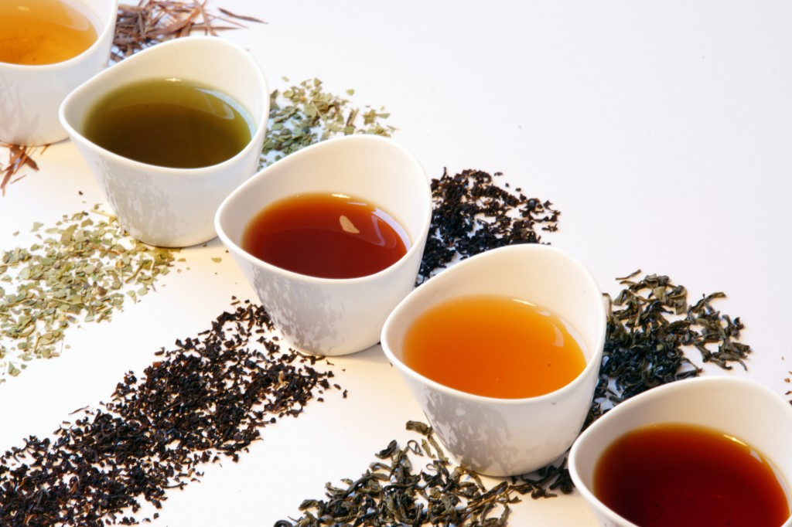

Как видно из приведённых выше правил, для качества заварки далеко не безразличны два фактора: температура воды, а также окружающей среды и время заваривания. И то и другое должно достичь определённого уровня, но не перешагнуть его. Дело в том, что переход растворимых веществ сухого чая в настой – весьма сложный процесс, ибо растворимость каждого химического соединения различна и требует разной температуры и разного времени. Кроме того, не все соединения в чае равноценны по своим ароматическим и вкусовым качествам. Поэтому нельзя ставить перед собой лишь цель – выжать из чая как можно больше растворимых веществ. Растворимость имеет определённый предел (для каждого типа, разновидности и сорта чая). Больше того, пытаясь искусственно воздействовать на чай (повышать температуру, давление и т. п.), можно в конце концов извлечь из него неприятные по вкусу и бесполезные (или вредные) для здоровья химические соединения.
Таким образом, качество чайного настоя определяет наиболее удачный набор содержащихся в чае полезных химических соединений и их сочетание в растворе. Чтобы достичь такого набора и сочетания, необходимо строго выполнять правила заваривания.
Любое, даже самое незначительное отклонение от правильного режима экстрагирования может вызвать нарушение наиболее благоприятного баланса веществ в чайном настое.
В домашних условиях такие отклонения от нормы, может быть, не так уж важны: во всяком случае, от этого пострадаем лишь мы сами, лишимся известного удовольствия. Другое дело – нарушение режима заваривания, допущенное в чайной промышленности при титестерских пробах с целью определения качества больших партий чая. Такое нарушение может вызвать ошибку в оценке качества сухого чая на один-два сорта, ибо титестер определяет в основном ценность чая по качеству настоя. Поскольку оценки титестеров касаются крупных партий продукции на большие суммы, то вполне понятно, во что может обойтись иногда торговле ошибка в заваривании. Вот вам и «заварка» чая! Вот вам и простое дело!
Естественно, что режим заваривания зависит от типа и сорта чая.
Для нежных, ароматных, высоких сортов лучше смягчать режим или укорачивать время заваривания при более или менее жёстком режиме.
Хорошие чёрные чаи ни в коем случае нельзя заваривать более 5 минут, если они листовые, и не более 4 минут, если они мелкие. Лучшее время при повышенном тепловом режиме (горячий сухой чайник, тёплое помещение, мягкая вода, кипящая «белым ключом», и двукратная заливка) – 3, 5-4 минуты. Более грубые чёрные чаи можно подвергать несколько более жёсткому режиму: сильнее нагретый сухой чайник, выдерживание в нём сухого чая в течение 2-3 минут, затем двух – и трёхкратная заливка в течение 4-4, 5 минуты, при этом следует увеличивать навеску в полтора раза (общее время заваривания может достигать 7-8 минут, а в некоторых случаях (холодное помещение) 10-12 минут.
Наоборот, цветочные чаи настаивают всего 1, 5-2 минуты. Для зелёных чаёв допустимы более жёсткие режимы заваривания. Настаивать можно максимум до 8-10 минут (вместо 5-6). Заливать лучше всего три или четыре раза: первая заливка – .слоем воды 1 см с выдержкой 1-2 минуты; вторая – до половины чайника – через 3-4 минуты; третья – ещё через 2-3 минуты – доверху или до 3/4 чайника; Четвёртая – через 2 минуты – доверху.
Ароматизированные зелёные чаи можно заваривать дважды: в первый раз настой держат 4 минуты, после чего чай выпивают, оставив не менее трети его в чайнике, и затем вторично заливают водой на 6-7 минут.
Для заваривания красных чаёв можно применять два режима. При первом в сухой, сильно разогретый чайник засыпают двойную навеску красного чая и выдерживают около 2 минут, после чего заливают небольшим количеством воды (слоем 2, 5 см), через 1-2 минуты заливают второй раз до половины чайника, а ещё через 2 минуты, в третий раз, доверху. Общее время заварки 3, 5-4 минуты.
При втором режиме в хорошо нагретый сухой чайник засыпают тройную навеску чая, заливают её кипящей водой сразу доверху и выдерживают 3 минуты, в течение которых чайник с заваркой обливают крутым кипятком сверху, извне.
Для жёлтых чаёв допустимы лишь мягкие режимы заварки, с сокращённым временем. После первой заливки жёлтый чай настаивают всего 1-1, 5 минуты, затем его уже можно пить, и одновременно заваривают второй раз, выдерживая настой более длительное время – 3 минуты; а в случае третьей заварки – 4 минуты.
Аналогичное увеличение времени настаивания применяют, как мы видели выше, к ароматизированным, цветочным и вообще ко всем другим наиболее высококачественным чаям, если их заваривают вторично. В связи с этим возникает вопрос: сколько раз можно заваривать сухой чай и не правильнее ли будет отказаться вообще от вторичной заварки?
Обычно при нормальном, умеренном режиме чай неспособен отдать все экстрактивные вещества в настой при первой же заварке. Если максимальное количество экстрактивных веществ, которые должны перейти в настой, принять за 100 %, то при первой заварке в настой выделяется 70-75 % кофеина и 40-55 % танина. При этом листовые чаи экстрагируются хуже, вернее – медленнее, чем мелкие. Поэтому из мелких чаёв в первую заварку выходит в настой гораздо больше растворимых веществ. Мелкие чаи отдают в первую заварку 70 % всех растворимых веществ, во вторую – 20 %, а в третью – 10 %. Такова, например, отдача грузинского чая. Вообще отечественные чаи обладают способностью при первой же заварке отдавать максимум экстрактивных веществ. Таким образом, если после первой заварки получается нормальный чай средней крепости, то после второй настой будет более чем втрое слабее. Вот почему практически второй заваркой можно пренебречь, а для того чтобы добиться выхода в раствор остающихся в чае 30 % растворимых веществ, следует в дополнение к первой заварке доливать чайник с настоем в течение чаепития ещё один раз или дважды, если заваривать листовой чай или чай высокого сорта. Причём доливать кипяток нужно по принципу: «в заварку столько, в первую доливку полстолька, а во вторичную доливку четверть столько». Лучше всего доливать вновь свежевскипячённую воду. Вначале доливать тогда, когда выпита треть чайника, а второй раз – когда осталась лишь четверть чайника. Сливать чай из чайника, пока не окончено чаепитие, не рекомендуется. На языке любителей чая это называется «спить чай», ибо оголённые листья чая вторично не заварятся и настоя не получится, чай будет бледным и совершенно лишённым вкуса.
Плиточные и таблетированные чаи завариваются как и байховые, но с некоторой разницей: время заваривания таблетированных чаёв всегда точно указано в приложенной к ним инструкции – обычно 3-5 минут, а плиточные чаи требуют для заваривания гораздо больше времени, чем их байховые разновидности, – обычно 7-8 минут, но не более 10 минут. Экстрагированные чаи не заваривают: они растворяются в любой воде моментально и без осадка.